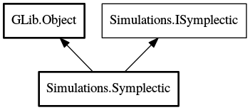

Symplectic
Object Hierarchy:

Description:
protected abstract class Symplectic :
Object,
ISymplectic
Symplectic integrator abstract superclass, leaves integration method selection to subclasses
Content:
Creation methods:
- protected Symplectic (IModel model, double h)
This is a protected constructor; use the static factory
getIntegrator to obtain a concrete subclass.
Methods:
- protected void base2 (double s)
Stormer-Verlet base integrator. Performs the following calls on
IModel per iteration:
- protected void base4 (double s)
Suzuki composition from 2nd order to 4th order. Performs the
following calls per iteration:
- protected void base6 (double s)
Suzuki composition from 4th order to 6th order. Performs the
following calls per iteration:
- protected void base8 (double s)
Suzuki composition from 6th order to 8th order. Performs the
following calls per iteration:
- protected abstract void step ()
Fields:
- protected IModel model
The physical model, defined at subclass construction
- protected double h
Simulation time step, defined at subclass construction
- protected double x1
Suzuki composition coefficients
- protected double y1
- protected double z1
- protected double x3
- protected double y3
- protected double z3
Inherited Members:
All known members inherited from class GLib.Object
- @new
- newv
- new_valist
- get_type
- get_class
- @ref
- unref
- ref_sink
- weak_ref
- weak_unref
- add_weak_pointer
- remove_weak_pointer
- @get
- @set
- get_property
- set_property
- get_data
- set_data
- set_data_full
- steal_data
- get_qdata
- set_qdata
- set_qdata_full
- steal_qdata
- freeze_notify
- thaw_notify
- dispose
- constructed
- notify_property
- connect
- disconnect
- add_toggle_ref
- remove_toggle_ref
- bind_property
- notify
- ref_count
All known members inherited from interface Simulations.ISymplectic